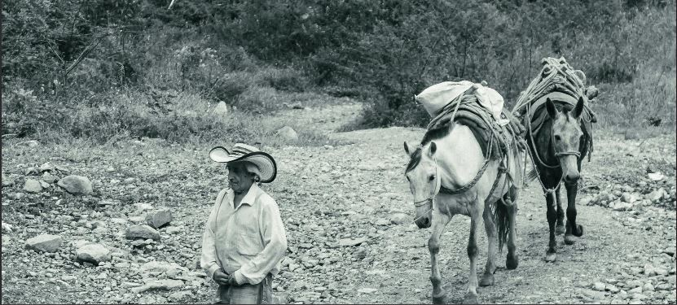
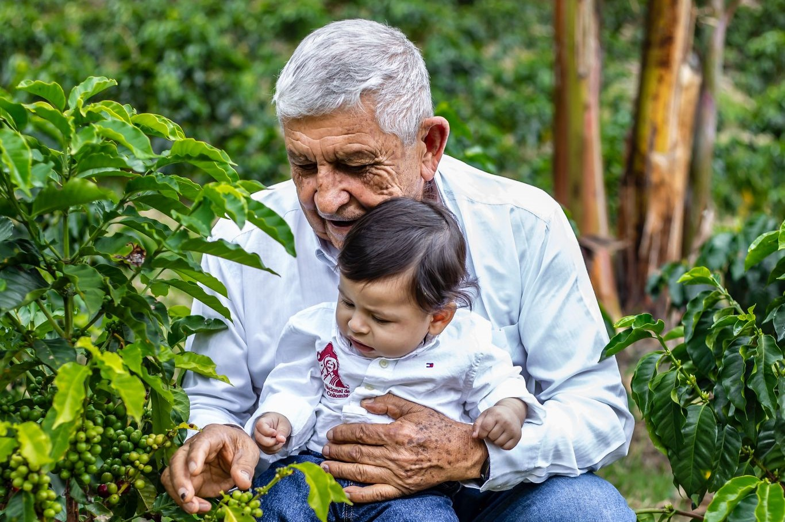

Nuestra Historia: el corazón de Café D’Medina
Descubre el legado familiar que ha cultivado la pasión por el café de origen durante generaciones. Un viaje que comenzó en las montañas de Colombia y que hoy llega hasta tu taza.

Un legado cafetero que nace en los años 30
Desde la década de 1930, nuestra familia ha estado profundamente ligada al café. Todo comenzó con don Narciso Medina Grisales, quien transportaba a lomo de mula los sacos de café desde Mistrató hasta Andes, Antioquia.
Cruzaba montañas con esfuerzo, determinación y orgullo por lo que cultivaba. Ese fue el inicio de una historia familiar marcada por la tierra, el trabajo y el café.
La consolidación de una pasión
En 1958, su hijo Luis Medina heredó no solo la finca “La Linda”, sino también el compromiso de hacer las cosas bien.
Con trabajo incansable, consolidó la producción cafetera como el corazón de nuestra familia. Su visión y dedicación sentaron las bases de lo que hoy representa Café D’Medina: tradición, origen y respeto por la tierra.


Tres generaciones de amor por el café
Hoy, esta herencia vive en cada grano que cultivamos y seleccionamos. Tres generaciones después, seguimos apostando por el origen, la calidad y el sabor auténtico del café de nuestra tierra.
Café D’Medina no es solo una marca; es la historia de una familia que ha hecho del café una forma de vida. Un legado construido con esfuerzo, tradición y pasión, que hoy se transforma en un compromiso con la excelencia reflejado en cada taza.
Volver al inicio